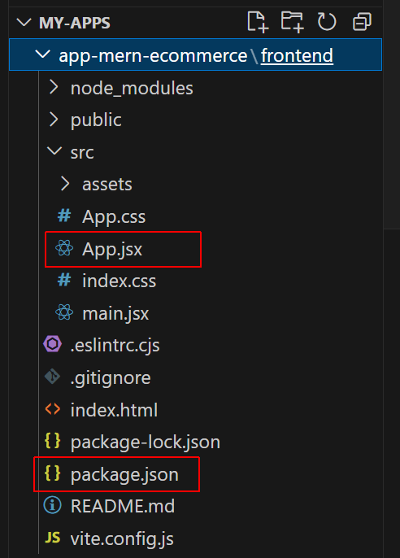

Learning Goals
At the end of this Tutorial, you will be able to:
- Set up the frontend and backend layers of a full-stack MERN app.
NodeJS and MongoDB Compass
Before continuing, ensure you have the following two apps installed on your local machine:
You also need an account with MongoDB Atlas.
1: Scaffolding your frontend with Vite
Vite is a modern build tool that provides a streamlined workflow for building web applications, especially those using React. It has replaced the older utility called create-react-app.
Follow these steps to scaffold your app with Vite:
-
In a terminal, navigate to where you want to create the folder to
hold your MERN app, and then create the folder. For example:
app-mern-ecommerce:
C:\my-apps\app-mern-ecommerce>
-
In this app-mern-ecommerce folder, type the following
command that includes the name you want to call the frontend layer
of your new app. In this example, let's name it frontend.
npm create vite@latest frontend -- --template react

-
If you do not already have Vite installed, you will be prompted to
install it.

-
When Vite completes the build process, you will see the message
below.

-
Follow these instructions to continue building your app, and then
running it.

When you launch your new app with npm run dev, it should look as shown below in your browser.

ReactJS folders and files
Vite will create the following hierarchy of folders and files.
Your App.jsx file may contain all the code for your ReactJS app. But more commonly, it acts as a parent component that imports other, single-purpose 'child' components.
2: Setting up your Express backend
Follow the steps below:
-
In your app folder (for example, app-mern-ecommerce),
create a sub-folder for the backend layer. Let's name this
sub-folder server:

-
In a terminal, navigate to this new sub-folder. For example:
C:\my-apps\app-mern-ecommerce\backend>
-
Run the following command to create an npm project for your
backend layer:
npm init -y
-
Install the following modules locally:
npm i express mongoose cors dotenv -
Next, install the nodemon module locally as a dev dependency:
npm i --save-dev nodemon
-
In your /backend folder, create a new text file and name it
.env.
Enter in this file a port number (for example, 5000) and
your
MongoDB Atlas credentials.

-
In your /backend folder, open your
package.json file. It should look similar to that shown on
the left below. Update this file as shown below on the right, and
save the file.

-
Create a new text file, paste in the following code, and save the
file as index.js in your /backend folder:
import express from 'express' import dotenv from 'dotenv' dotenv.config() const PORT = process.env.PORT; const mongoDBUri = process.env.mongoDBUri; import mongoose from 'mongoose'; import cors from 'cors' const app = express() // Middleware for CORS app.use(cors()) async function connectToMongoDB() { try { await mongoose.connect((mongoDBUri), { useNewUrlParser: true, useUnifiedTopology: true }); console.log('Express app connected to MongoDB'); app.listen(PORT, () => { console.log(`Express app listening on port ${PORT}`) }) } catch (error) { console.error('Could not connect to MongoDB', error); } } connectToMongoDB(); -
Finally, in your terminal, start your new Express server:
npm run dev
Your terminal window should look as follows:

You are now ready to add a data model and paths to your MERN project.